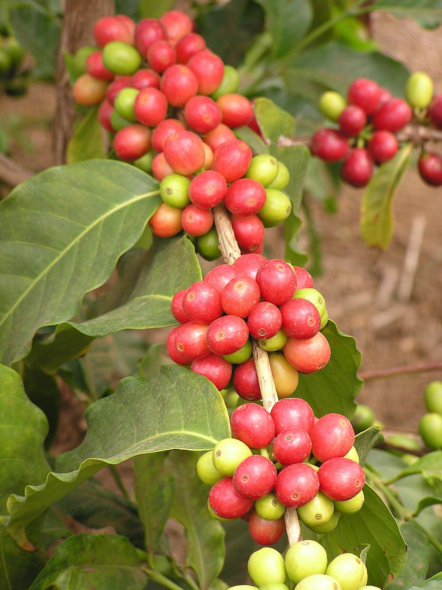
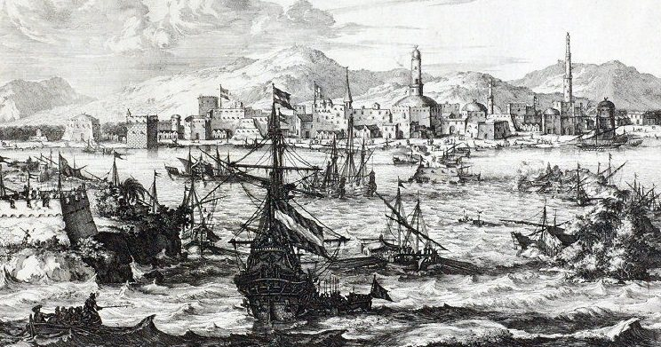
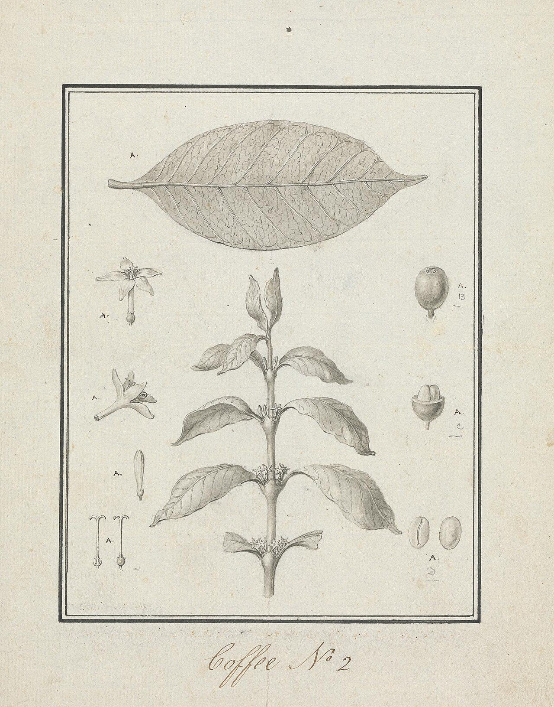
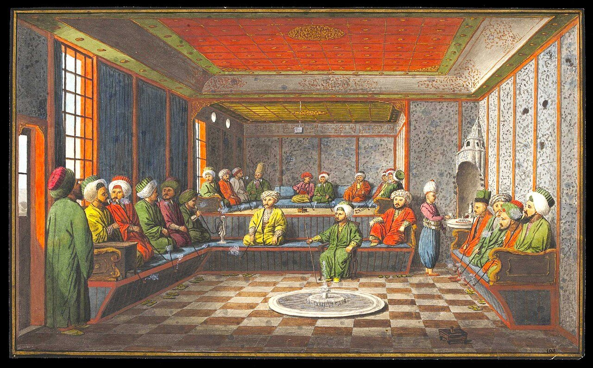
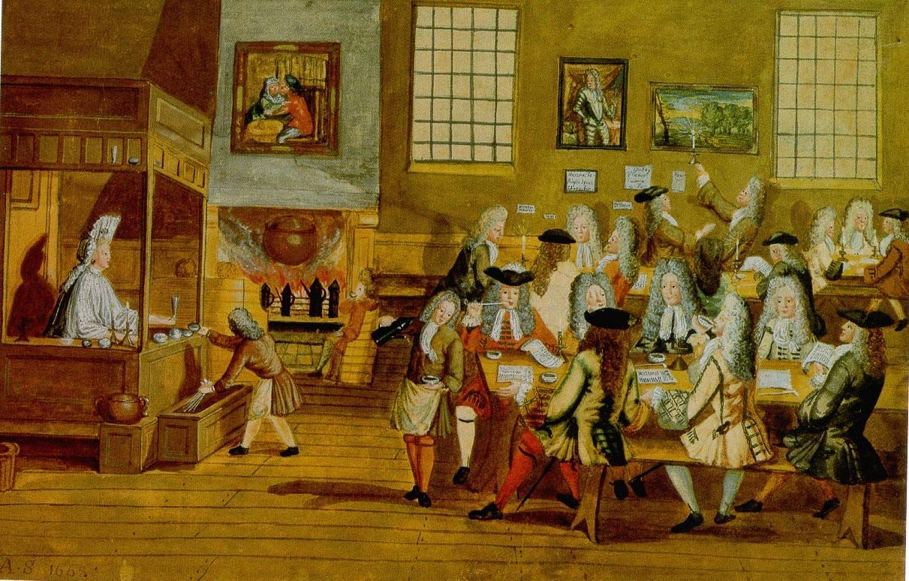
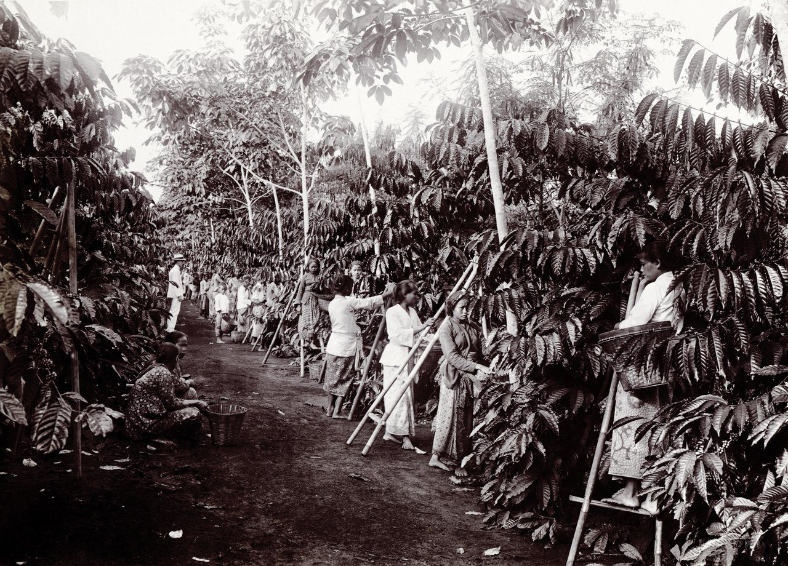
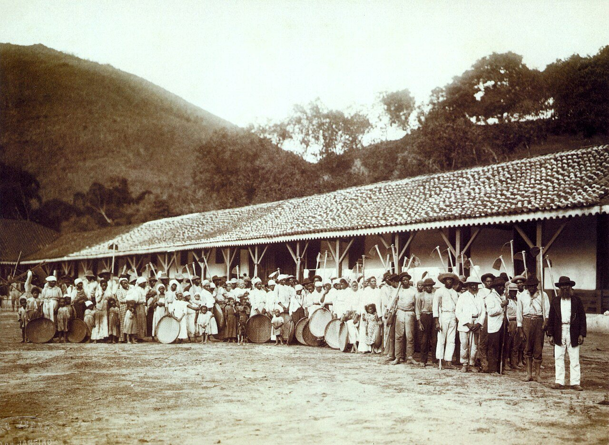
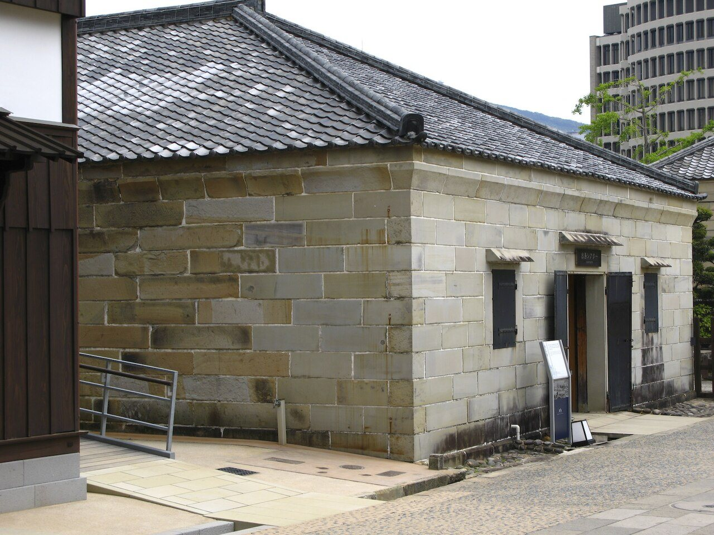

ロンドンの金融街シティ、1652年。セント・マイケルズ・アレーという細い路地で、パスカ・ロゼという男がコーヒーを売り始めました。トルコ方面の品を扱う商人の使用人だった人物で、これがロンドンで最初のコーヒーハウスとされています。
それから370年あまり。いまでは世界で1年に約1,100万トンのコーヒー豆がとれています（2023年）。けれども、コーヒーの木はもともと、東アフリカの森にしか生えていなかった植物です。その実が、どうやって地球の裏側まで広まったのでしょうか。

東アフリカの森に生えていた木の実が、いまでは世界中で毎日飲まれています。修行者の眠気覚まし、街のコーヒーハウス、そして海を渡った苗木。地図と年表で、コーヒーがたどった500年あまりの旅を追ってみませんか。
ロンドンの金融街シティ、1652年。セント・マイケルズ・アレーという細い路地で、パスカ・ロゼという男がコーヒーを売り始めました。トルコ方面の品を扱う商人の使用人だった人物で、これがロンドンで最初のコーヒーハウスとされています。
それから370年あまり。いまでは世界で1年に約1,100万トンのコーヒー豆がとれています（2023年）。けれども、コーヒーの木はもともと、東アフリカの森にしか生えていなかった植物です。その実が、どうやって地球の裏側まで広まったのでしょうか。
眠気覚ましとして広まった飲み物を、ヨーロッパの国々が植民地で育てて売り、苗木が海を渡るたびに産地が増えていったから。
コーヒーの代表的な種類「アラビカ種」は、エチオピア南部などの森に野生で生えています。赤い実を食べたヤギが元気に跳ね回るのを見て、ヤギ飼いがその力に気づいた──。そんな伝説が有名ですが、文献に出てくるのは1671年が最初で、作り話と考えられています。
確かな記録が残るのは、15世紀の南アラビアのイエメンです。イスラム教の神秘主義の修行者「スーフィー」たちが、夜のお祈りのあいだ眠らずにいるために飲んでいました。飲み物としてのコーヒーは、ここから広まり始めます。
イエメンで栽培されたコーヒーは、紅海に面した港町モカから船で送り出されました。17世紀の終わりまで、世界のコーヒーはほぼすべてモカから出ていったといわれます。いまも「モカ」がコーヒーの名前に残っているのは、そのなごりです。


コーヒーは16世紀のはじめまでに、メッカやカイロ、イスタンブールへ伝わります。人が集まって語り合う場になったため、1511年にはメッカで禁止されたこともありました。それでも人気はおとろえず、禁止は1524年にオスマン帝国のスルタンによって取り消されています。
1554年、オスマン帝国の都イスタンブールに、最初のコーヒーハウスが開きます。オスマン帝国と取り引きしていたヴェネツィアの商人がヨーロッパへ持ちこみ、1645年にはヴェネツィアに、1650年にはイギリスのオックスフォードに店ができました。


ロンドンのコーヒーハウスは、新聞を読み、うわさ話や商売の情報を交わす場所になりました。テムズ川に近いタワー・ストリートにあった「ロイズ・コーヒーハウス」は、店主のエドワード・ロイドが船の出入りの確かな情報を集めたことで、船乗りや商人が集まる店になります。
やがてこの店は、船の積み荷にかける保険を引き受ける人が集まる場所になりました。これが、いまも世界有数の保険市場として知られる「ロイズ」の始まりです。店の名前が新聞に初めて出てくるのは、1688年のことです。
飲む人が増えると、ヨーロッパの国々は考えます。モカから買うのではなく、自分たちの土地で育てられないか。先に動いたのは、アジアとの貿易を任されていたオランダ東インド会社でした。
1696年、インド南西部のマラバール海岸から、ジャワ島のバタヴィア（いまのジャカルタ）に苗木が送られます。最初の苗は洪水でだめになりましたが、1699年に送り直した苗が育ちました。1711年には、ジャワのコーヒーがヨーロッパへ輸出され始めます。

苗木は大西洋も渡ります。1720年代、フランスの海軍士官ド・クリューが、カリブ海のマルティニーク島に苗木を運びました。航海中に飲み水が足りなくなり、自分の分を苗に分けたという話が伝わっています。1727年には、フランス領ギアナから持ち出された種で、ブラジル北部に最初の農園ができました。
ブラジルは1840年代に世界一の産地になり、1920年代には世界のコーヒーの約8割をつくるまでになります。ただし、その農園を支えたのは、アフリカから連れてこられ、奴隷として働かされた人々でした。ブラジルで奴隷制が廃止されたのは、1888年のことです。

日本にコーヒーを持ちこんだのは、江戸時代に長崎の出島にいたオランダ人だとされています。ただ、時期には諸説があり、飲めたのは通訳や役人などごく一部の人だけでした。1804年、文人の大田南畝（おおた・なんぽ）はオランダ船で飲んだ感想を「焦げくさくして味ふるに堪ず」、つまり焦げくさくて飲めたものではない、と書き残しています。

広まったのは、明治に入ってからです。1888年4月、東京・上野に、鄭永慶（てい・えいけい）が「可否茶館（かひいさかん）」を開きました。新聞や雑誌、トランプや碁を置き、誰でも集まって話せる場所を目指した店でした。経営はうまくいかず、4年ほどで閉じましたが、日本の喫茶店の始まりとしてよく名前が挙がります。
いま、世界でいちばん多くのコーヒー豆をつくっているのはブラジルです。2位のベトナムには、19世紀にフランスの宣教師が持ちこんだとされます。生まれ故郷のエチオピアは5位。上位の国のほとんどは、もともとコーヒーの木がなかった土地です。
世界で1年にとれるコーヒー豆の量2023年、FAO の統計
そのうち、ブラジル1国がつくる割合2023年、FAO の統計から計算
1920年代に、ブラジルが世界の生産に占めていた割合英語版 Wikipedia「Coffee production in Brazil」
1706年、ジャワで育ったコーヒーの木のたった1本が、オランダのアムステルダムの植物園に運ばれました。その子孫が1714年にフランスへ贈られ、1720年代にマルティニークへ。そこからスリナム、フランス領ギアナ、ブラジル、ジャマイカ、コスタリカなどへ広がったといわれています。
そのため、世界で育てられているアラビカ種は、もとをたどるとごく少ない数の木から来ていて、遺伝的な多様性（性質のばらつき）がとても小さいことがわかっています。野生の木が残るエチオピアなどの森は、コーヒーの未来にとって大切な「たね倉」でもあるのです。
次にコーヒーを飲むときは、カップの中をのぞいてみてください。その一杯の祖先は、300年前に船で海を渡った1本の苗木だったのかもしれません。